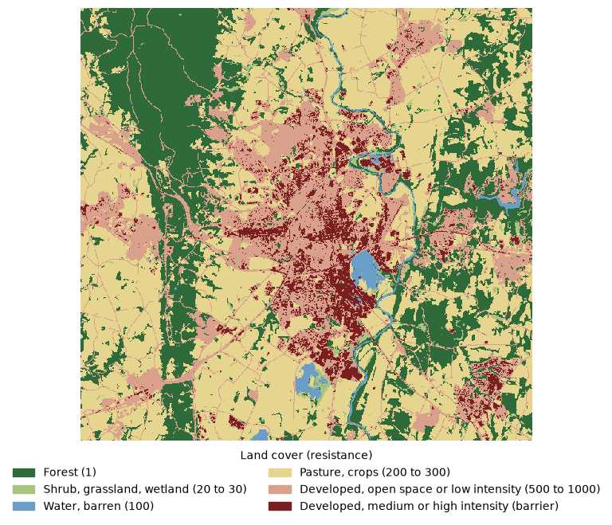
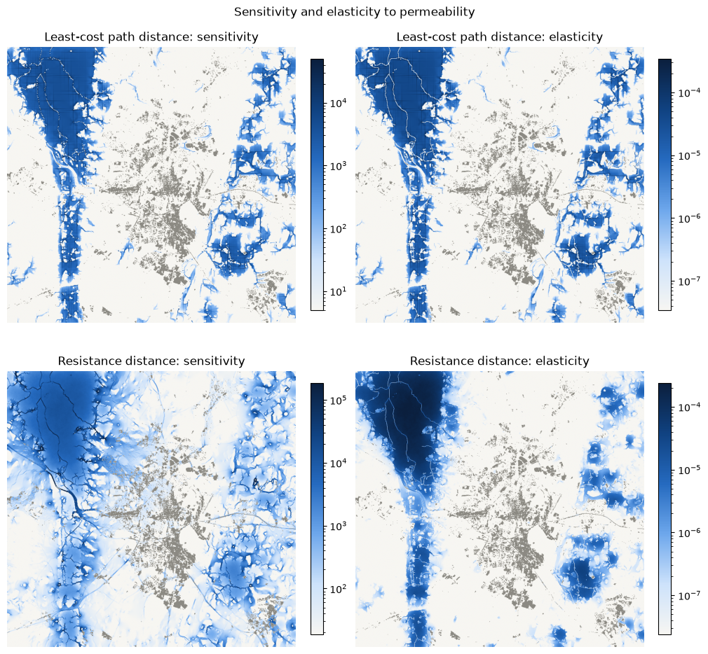
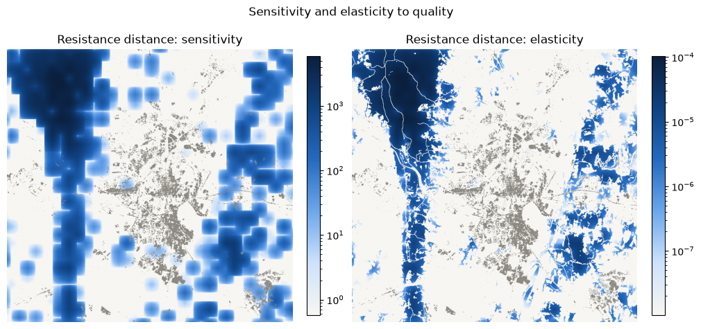
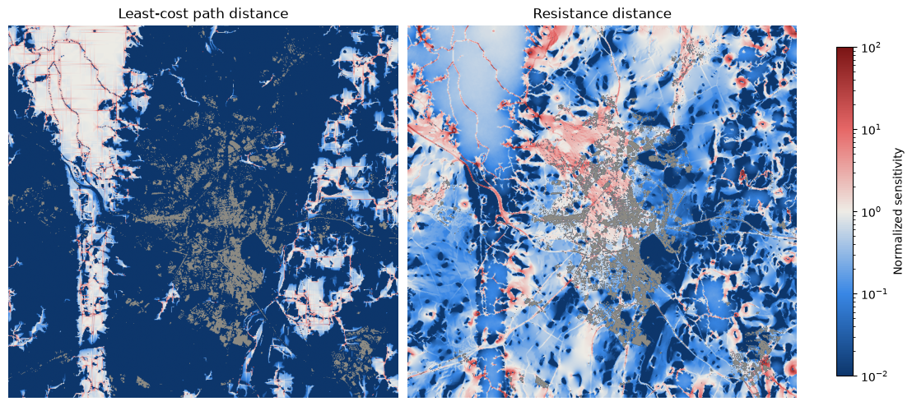
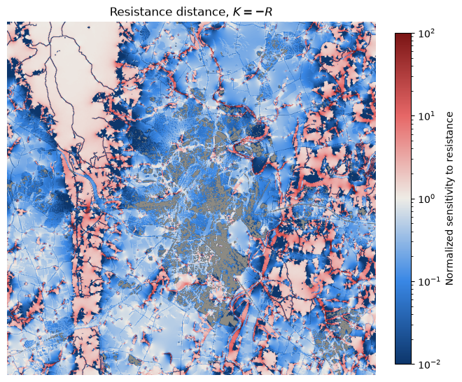

Connectivity analysis¤
A connectivity analysis quantifies how much habitat a species can reach, given the resistance of the landscape to its movement. JAXScape measures it by the connectivity
where \(q_i\) is the habitat quality of pixel \(i\) and \(K_{ij}\) is the proximity of pixels \(i\) and \(j\): a dispersal kernel that decreases with a distance \(d_{ij}\), which grows with the resistance (the inverse of the permeability \(p\)) of the pixels between them. Maps of the sensitivities of \(C\), its derivatives with respect to the permeability \(p_k\) and the habitat quality \(q_k\) of each pixel \(k\), show where a gain in permeability or in habitat most increases the habitat that the species can reach. The elasticities express the same derivatives in relative terms.
This example computes \(C\) with ConnectivityAnalysis and its sensitivities with SensitivityAnalysis, on the 2016 land cover around Frederick, Maryland, with forest as the habitat, for two distances: the least-cost path distance and the resistance distance.
Prerequisites¤
uv add jaxscape rasterio matplotlib
The analyses run on CPU or GPU; see the installation instructions for NVIDIA GPUs.
import time
import urllib.request
from pathlib import Path
import jax
import jax.numpy as jnp
import matplotlib.pyplot as plt
import numpy as np
import rasterio
from jaxscape import (
ConnectivityAnalysis,
LCPDistance,
ResistanceDistance,
SensitivityAnalysis,
SpielmanApproximation,
)
from jaxscape.solvers import GeometricMultigridCGSolver
from matplotlib.colors import LinearSegmentedColormap, ListedColormap, LogNorm
from matplotlib.patches import Patch
print(jax.devices()[0].device_kind)
NVIDIA GeForce RTX 3090
# Download the land cover raster if not already present
path = Path("../data/nlcd_2016_frederick_md.tif")
if not path.exists():
path.parent.mkdir(exist_ok=True)
urllib.request.urlretrieve(
"https://raw.githubusercontent.com/Circuitscape/datasets/main/data/"
"nlcd_2016_frederick_md.tif",
path,
)
Land cover, habitat quality and permeability¤
The analyses take two rasters of the same shape: the habitat quality \(q\) and the permeability \(p\) of each pixel. Both derive here from the classes of the 2016 National Land Cover Database (NLCD), in pixels of 30 m, through the resistances of Omniscape.jl's example on the same raster.
- Habitat quality is 1 in forest, the land cover of resistance 1, and 0 elsewhere.
- Permeability is the inverse of the resistance: 1 in forest, down to 1/1000 in low-intensity development. Medium- and high-intensity development are barriers, of infinite resistance and permeability 0. The analyses raise every permeability below the permeability floor, \(10^{-4}\) times the largest permeability, to that floor: barriers are nearly impassable, and the graph of every window stays connected.
with rasterio.open(path) as src:
landcover = src.read(1)
# Resistance of each land cover class, from Omniscape's example; inf for barriers
resistance_table = {
11: 100, # Open water
21: 500, # Developed, open space
22: 1000, # Developed, low intensity
23: np.inf, # Developed, medium intensity
24: np.inf, # Developed, high intensity
31: 100, # Barren land
41: 1, # Deciduous forest
42: 1, # Evergreen forest
43: 1, # Mixed forest
52: 20, # Shrub/scrub
71: 30, # Grassland/herbaceous
81: 200, # Pasture/hay
82: 300, # Cultivated crops
90: 20, # Woody wetlands
95: 30, # Emergent herbaceous wetlands
}
lookup = np.full(256, np.nan)
for nlcd_class, value in resistance_table.items():
lookup[nlcd_class] = value
resistance = lookup[landcover]
permeability = jnp.asarray(1 / resistance, dtype="float32") # 0 for barriers
quality = jnp.asarray(resistance == 1, dtype="float32") # Forest
barrier = np.isinf(resistance)
print(f"{quality.size:,} pixels: {quality.mean():.0%} forest")
print(f"{barrier.mean():.0%} barriers")
503,150 pixels: 26% forest
6% barriers
groups = {
"Forest (1)": ([41, 42, 43], "#2f6b3a"),
"Shrub, grassland, wetland (20 to 30)": ([52, 71, 90, 95], "#a9c47f"),
"Water, barren (100)": ([11, 31], "#6a9ec9"),
"Pasture, crops (200 to 300)": ([81, 82], "#e6d58f"),
"Developed, open space or low intensity (500 to 1000)": ([21, 22], "#d9a08b"),
"Developed, medium or high intensity (barrier)": ([23, 24], "#7a1f1f"),
}
group = np.zeros(landcover.shape, int)
for index, (classes, _) in enumerate(groups.values()):
group[np.isin(landcover, classes)] = index
fig, ax = plt.subplots(figsize=(7.5, 8), layout="constrained")
colors = [color for _, color in groups.values()]
ax.imshow(group, cmap=ListedColormap(colors), interpolation="nearest")
handles = [Patch(color=color, label=name) for name, (_, color) in groups.items()]
ax.legend(
handles=handles,
title="Land cover (resistance)",
loc="upper center",
bbox_to_anchor=(0.5, 0),
ncols=2,
frameon=False,
)
ax.axis("off")
plt.show()

Settings¤
Both analyses count only the pairs of pixels within a window centred on each pixel, so that their cost grows linearly with the number of pixels. The two distances share all other settings, those of Omniscape.jl's example, so that their maps compare directly.
- Dependency range \(D = 100\) pixels (3 km): the half-width of the window. Pairs of pixels farther apart than \(D\) along either axis do not contribute to \(C\).
- Coarsening:
coarsening_factor=0.2divides the raster into blocks of \(b \times b = 21 \times 21\) pixels. The analyses compute the distances from the block centres only, and interpolate between them (seeWindowedAnalysis). - Proximity: the default, the negative-exponential dispersal kernel \(K(d) = e^{-d/\alpha}\) with \(\alpha = D/4 = 25\) pixels (750 m), where \(d\) is the distance in equivalent pixels: the separation, in pixels along an axis, of two pixels of a uniform forest landscape (permeability 1) at the same distance. The mean dispersal distance of this kernel is \(2\alpha = 50\) pixels (1.5 km).
- Distances: the least-cost path distance (
LCPDistance) is the cost of the cheapest route between two pixels; the resistance distance (ResistanceDistance) depends on all routes.SpielmanApproximationestimates the resistance distance by random projections. - Batch size: for the least-cost path distance, the number of windows computed together; for the resistance distance, the largest number of block centres in one tile, the union of their windows, on whose graph one query computes the distances from these block centres to the pixels of their windows. Here, one tile holds all block centres.
All rasters are float32.
Theory: least-cost path and resistance distances
The pixels form a graph: each pixel is a vertex, joined to its four neighbours by edges of conductance \(a_e\), the mean permeability of the two pixels.
- The least-cost path distance between two pixels is the smallest sum of the edge costs \(1/a_e\) over the paths that join them. It describes a species that moves along the cheapest route.
- The resistance distance is the effective resistance between the two pixels in the electrical circuit whose edges have conductances \(a_e\). It equals the commute time of a random walker, which steps to a neighbour with probability proportional to the conductance of the edge, divided by twice the sum of the conductances; the commute time is the expected number of steps from one pixel to the other and back. It describes a species that moves at random, and depends on all paths.
Implementation: coarsening, randomized resistance distance and linear solver
- Coarsening. The block side \(b\) is \(0.2 D = 20\) pixels rounded up to an odd integer. Values between block centres are interpolated bilinearly; the sensitivity to habitat quality, which is twice the habitat within reach of each pixel, is interpolated from its values at the block centres. For the sensitivity to permeability with the resistance distance, the distances in the window of each block centre are computed from its block source: the habitat pixels that the centre stands for, weighted by their interpolation weights, so that one query gives the mean of their resistance distances to each pixel of the window. With the least-cost path distance, the analyses add a block correction after Omniscape's for the pairs of pixels within blocks. They compute it in a window of uniform permeability; where the landscape is not uniform, the maps then show straight lines along the lattice of block centres. Computing every window,
coarsening_factor=0, removes these lines and requires \(b^2\) times more windows. - Randomized resistance distance.
SpielmanApproximationestimates resistance distances from \(k = \lceil \log(n) / \epsilon^2 \rceil\) random projections in a graph of \(n\) pixels. Each projection requires solving a linear system in the graph Laplacian, and all windows of a tile share these solutions. With a smallerepsilon, the estimates are less noisy and require more linear solves. Comparing the maps of two values ofseedshows how much the noise affects them. - Linear solver. Computing resistance distances requires solving linear systems in the graph Laplacian.
GeometricMultigridCGSolversolves them by the conjugate gradient (CG) method with a geometric multigrid preconditioner, on CPU or GPU, to the relative tolerancertol. The other solvers are listed in Linear solvers.
D = 100 # Dependency range, in pixels: windows of 201 x 201 pixels
settings = dict(dependency_range=D, coarsening_factor=0.2) # Blocks of 21 x 21 pixels
distances = {
"Least-cost path distance": dict(distance=LCPDistance(), batch_size=64),
"Resistance distance": dict(
distance=ResistanceDistance(
solver=GeometricMultigridCGSolver(rtol=3e-4),
method=SpielmanApproximation(epsilon=0.15),
),
batch_size=4096, # One tile holds all block centres
),
}
Connectivity and its sensitivities¤
ConnectivityAnalysis computes the connectivity \(C\), a single number. SensitivityAnalysis computes the derivative of \(C\) with respect to the permeability or the habitat quality of every pixel, by automatic differentiation in the same windows: a map of the same shape as the rasters.
Theory: connectivity, sensitivity and elasticity
The connectivity is the sum, over the pairs of distinct pixels \(i, j\), of the product of their habitat qualities and of their proximity \(K_{ij}\), a decreasing function of the distance \(d_{ij}\) between them:
With \(q\) equal to 1 in habitat and 0 elsewhere, \(\sum_{j \neq i} K_{ij} q_j\) is the amount of habitat within reach of pixel \(i\), each habitat pixel weighted by its proximity to \(i\), and \(C\) is the sum of this amount over the habitat pixels.
The sensitivity of \(C\) to the permeability \(p_i\) of pixel \(i\) is the derivative \(\partial C / \partial p_i\): the change of \(C\) per unit increase of \(p_i\). The sensitivity to the habitat quality is \(\partial C / \partial q_i\); if \(K_{ij} = K_{ji}\),
twice the habitat within reach of pixel \(i\).
The elasticity is the relative change of \(C\) for a relative change of the value of a pixel:
With a 1 % increase of \(p_i\), \(C\) increases by about \(E^p_i\) %. Elasticities do not depend on the units of \(p\), \(q\) and \(C\). Ranking pixels by sensitivity compares the effect of the same absolute change of permeability at every pixel, which is large relative to the permeability of the least permeable pixels; ranking them by elasticity compares the effect of the same relative change. As the pair \((i, i)\) does not count, \(C\) is linear in each \(q_i\): \(q_i \, \partial C / \partial q_i\) is the loss of connectivity if pixel \(i\) loses its habitat, and \(E^q_i\) is this loss as a fraction of \(C\).
Sensitivities and elasticities are derivatives: they are the effect of small changes, and an approximation of the effect of larger ones, such as converting cropland to forest.
The function below runs the analyses for one distance and records their runtimes, listed in the last section. Besides \(C\) and its sensitivities to \(p\) and \(q\), it computes the reference sensitivity to permeability: the sensitivity with the same habitat quality and permeability 1 at every pixel, the denominator of the normalized sensitivity.
uniform = jnp.ones_like(permeability) # Permeability 1, that of forest, everywhere
runtimes = {}
def timed(label, run):
start = time.perf_counter()
result = jax.block_until_ready(run())
runtimes[label] = time.perf_counter() - start
return result
def analyse(name, distance, batch_size):
common = dict(
settings, quality_raster=quality, distance=distance, batch_size=batch_size
)
landscape = dict(common, permeability_raster=permeability)
reference = dict(common, permeability_raster=uniform)
connectivity = timed(
f"{name}, connectivity", lambda: ConnectivityAnalysis(**landscape).run()
)
to_permeability = timed(
f"{name}, sensitivity to permeability",
lambda: SensitivityAnalysis(**landscape).run("permeability"),
)
to_quality = timed(
f"{name}, sensitivity to quality",
lambda: SensitivityAnalysis(**landscape).run("quality"),
)
reference_to_permeability = timed(
f"{name}, reference sensitivity to permeability",
lambda: SensitivityAnalysis(**reference).run("permeability"),
)
return dict(
connectivity=float(connectivity),
permeability=np.asarray(to_permeability),
quality=np.asarray(to_quality),
reference=np.asarray(reference_to_permeability),
)
results = {name: analyse(name, **arguments) for name, arguments in distances.items()}
Sensitivity to permeability¤
The map of the sensitivity to permeability shows where a gain in permeability most increases the habitat that the species can reach. The elasticity is the sensitivity times \(p_k / C\); its map shows the same for a relative gain. Barriers are grey.
sequential = LinearSegmentedColormap.from_list(
"sequential", ["#f7f6f2", "#cde2fb", "#6da7ec", "#256abf", "#104281", "#0b1f3d"]
)
grey = ListedColormap(["#8c8a83"])
def show(ax, values, cmap, norm, title):
# Rasters are downsampled to the figure by averaging their colours.
image = ax.imshow(values, cmap=cmap, norm=norm, interpolation_stage="rgba")
ax.imshow(
np.ma.masked_where(~barrier, barrier), cmap=grey, interpolation_stage="rgba"
)
ax.set_title(title)
ax.axis("off")
return image
def sensitivity_maps(var, raster, names):
fig, axs = plt.subplots(
len(names), 2, figsize=(10, 0.5 + 4.5 * len(names)), layout="constrained"
)
for row, name in zip(np.atleast_2d(axs), names):
result = results[name]
sensitivity = result[var]
elasticity = np.asarray(raster) * sensitivity / result["connectivity"]
for ax, values, title in [
(row[0], sensitivity, "sensitivity"),
(row[1], elasticity, "elasticity"),
]:
top = np.percentile(values[values > 0], 99.9)
norm = LogNorm(top / 1e4, top)
values = np.clip(values, top / 1e4, top)
image = show(ax, values, sequential, norm, f"{name}: {title}")
fig.colorbar(image, ax=ax, shrink=0.8)
fig.suptitle(f"Sensitivity and elasticity to {var}")
plt.show()
sensitivity_maps("permeability", permeability, list(results))

With the least-cost path distance, the species moves along the cheapest routes, which stay in forest: a gain in permeability matters in forest and next to it only, and most where these routes cross the roads and streams inside forest. The resistance distance depends on all routes: a gain in permeability also matters in the farmland between forest patches, and most on the roads and streams that cross forest and in the farmland around small forest patches, through which movement between patches is funnelled. In both maps, the elasticities are largest in forest, most of all in the large western forest, where a given relative loss of permeability costs the most connectivity. The straight lines across forest in the least-cost path maps are an artefact of coarsening (see the implementation box in Settings).
Sensitivity to habitat quality¤
The map of the sensitivity to habitat quality shows where new habitat most increases connectivity. The elasticity to habitat quality, nonzero in forest only, is the fraction of \(C\) that is lost if the habitat of a pixel is lost: ranking forest pixels by it gives the pixels to protect. The maps below are those of the resistance distance.
sensitivity_maps("quality", quality, ["Resistance distance"])

New habitat adds the most connectivity in and next to large forests, where much habitat lies within reach, and little in the farmland and town between them. The forest pixels whose loss removes the largest fraction of \(C\) lie in the large western forest; those of small, isolated patches hold little of it. The square shapes around small forest patches come from the interpolation between block centres.
Normalized sensitivity¤
The sensitivity to permeability of a pixel depends on the habitat within its reach and on the land cover. The normalized sensitivity is its ratio to the reference sensitivity, computed with the same habitat and permeability 1 at every pixel: what remains is the effect of the land cover.
Theory: normalized sensitivity
The normalized sensitivity of pixel \(i\) is
where \(C^\circ\) is the connectivity of the same habitat quality \(q\) with permeability 1, that of forest, at every pixel. The denominator depends only on the position of pixel \(i\) relative to the habitat. Above 1, a gain in permeability at pixel \(i\) increases connectivity more than it would if every pixel had permeability 1; below 1, less.
For the least-cost path distance, the cost \(1/a_e\) of an edge \(e\) of pixel \(i\) has the derivative \(-1/(2 a_e^2)\) with respect to \(p_i\). The derivative of the distance between two pixels is the sum of these terms over the edges of pixel \(i\) on the cheapest route, and is 0 for a route without pixel \(i\).
For the resistance distance, let a unit current enter the circuit at pixel \(s\) and leave it at pixel \(t\). The current \(I_e\) through edge \(e\) is the expected net number of crossings of \(e\) by a random walker that starts at \(s\) and stops at \(t\). The derivative of the resistance distance \(R_{st}\) is
The sensitivity of \(C\) is the sum of the terms \(\frac{1}{2} \sum_{e \ni i} I_e^2 / a_e^2\) over the ordered pairs of distinct habitat pixels \(s, t\), with the weights \(-q_s q_t \, K'(R_{st})\), positive for a decreasing \(K\). Because of the factor \(1/a_e^2\), close to \(1/p_i^2\) where neighbouring pixels have similar permeabilities, the sensitivity is large on pixels of low permeability that random walkers between habitat pixels cross.
diverging = LinearSegmentedColormap.from_list(
"diverging", ["#0d366b", "#3987e5", "#eeece6", "#e66767", "#7a1414"]
)
def normalize(sensitivity, reference):
# The reference sensitivity is 0 at pixels that no cheapest route crosses.
ratio = np.divide(
sensitivity, reference, out=np.zeros_like(sensitivity), where=reference > 0
)
return np.clip(ratio, 1e-2, 1e2)
fig, axs = plt.subplots(1, 2, figsize=(11, 5.8), layout="constrained")
for ax, (name, result) in zip(axs, results.items()):
normalized = normalize(result["permeability"], result["reference"])
image = show(ax, normalized, diverging, LogNorm(1e-2, 1e2), name)
fig.colorbar(image, ax=axs, shrink=0.7, label="Normalized sensitivity")
plt.show()

For conservation planning, pixels with values above 1 are land of low permeability that movement between habitat patches crosses, where restoring permeability (wildlife crossings, hedgerows, riparian forest) gains the most connectivity: with the resistance distance, the roads and streams through forest, the farmland around small forest patches and the developed land next to barriers. Pixels with values far below 1 are where restoration gains little: small forest patches, whose permeability is already the highest, and farmland that movement between habitat patches bypasses. With the least-cost path distance, pixels with values above 1 lie mostly where the cheapest routes cross roads and streams inside forest.
Comparison with Omniscape's normalized current¤
Omniscape.jl maps connectivity with circuit theory in moving windows, and divides its cumulative current by the current with resistance 1 at every pixel: pixels with values above 1 are corridors and pinch points, where movement is channelled. Two changes bring the normalized sensitivity close to this normalized current: the derivative with respect to resistance instead of permeability, and a proximity with equal weights for all pairs of habitat pixels, \(K(R) = -R\). The proximity argument accepts any differentiable function of the distance.
Theory: normalized sensitivity and Omniscape's normalized current
Omniscape injects current from the habitat pixels of each window into its centre, sums the magnitudes of the currents through each pixel over all windows, and divides this cumulative current by the flow potential, the same sum with resistance 1 at every pixel. Two changes relate the normalized sensitivity of the resistance distance to this normalized current.
- Sensitivity to resistance. Multiplied by \(p_i^2\), the sensitivity to permeability becomes the sensitivity to the resistance \(r_i = 1/p_i\) of the pixel, with its sign changed: \(p_i^2 \, \partial C / \partial p_i = -\partial C / \partial r_i\). Where \(a_e \approx p_i\), the factor \(1/a_e^2\) cancels, and each pair of habitat pixels contributes \(\frac{1}{2} \sum_{e \ni i} I_e^2\), the squared currents through pixel \(i\).
- Equal pair weights. Each pair of habitat pixels \(s, t\) contributes with the weight \(-q_s q_t \, K'(R_{st})\). With the default kernel, \(-K'\) decreases with \(R\) as \(K\) does, so that the pairs that farmland separates weigh almost nothing; Omniscape injects the current of every source in the window, whatever the resistance between the source and the centre. With the proximity \(K(R) = -R\), every pair has the weight \(q_s q_t\), and \(C\) is minus the sum of the resistance distances between the habitat pixels within the dependency range of each other.
With permeability 1 at every pixel, \(p_i^2 = 1\), so the normalized sensitivity to resistance is \(p_i^2 \, \partial C / \partial p_i\) divided by the reference sensitivity \(\partial C^\circ / \partial p_i\).
The two quantities still differ. Omniscape sums the magnitudes of the currents from the sources of each circular window to its centre, on a graph of eight neighbours. SensitivityAnalysis sums the squared currents between all pairs of habitat pixels that lie within \(D\) of each other along both axes, on a graph of four neighbours.
equal_weights = dict(
settings,
proximity=lambda d: -d, # K(R) = -R: all pairs of habitat pixels weigh the same
quality_raster=quality,
**distances["Resistance distance"],
)
to_permeability = timed(
"Resistance distance, K = -R, sensitivity to permeability",
lambda: SensitivityAnalysis(**equal_weights, permeability_raster=permeability).run(
"permeability"
),
)
reference_to_permeability = timed(
"Resistance distance, K = -R, reference sensitivity to permeability",
lambda: SensitivityAnalysis(**equal_weights, permeability_raster=uniform).run(
"permeability"
),
)
# p² ∂C/∂p = -∂C/∂r; the reference permeability is 1
normalized = normalize(
np.asarray(permeability) ** 2 * np.asarray(to_permeability),
np.asarray(reference_to_permeability),
)
fig, ax = plt.subplots(figsize=(6.5, 6), layout="constrained")
image = show(
ax, normalized, diverging, LogNorm(1e-2, 1e2), "Resistance distance, $K = -R$"
)
fig.colorbar(image, ax=ax, shrink=0.8, label="Normalized sensitivity to resistance")
plt.show()

Omniscape.jl's documentation shows its normalized current for the same land cover, radius and blocks, on a linear colour scale:

Normalized current flow of Omniscape.jl's example.
In both maps, values exceed 1 along the same corridors: the river and the streams lined with forest, the north-south strip of forest in the west, and the links between the forest patches of the east. A planner reads this map as Omniscape's: pixels with values above 1 are corridors and pinch points to protect, where movement concentrates and a loss of permeability costs the most connectivity; pixels with values below 1 are land where movement is impeded. The map of the normalized sensitivity to permeability, in the previous section, shows in addition where restoration pays off.
Runtimes¤
The runtimes include creating the analyses and compiling their programs, which JAX does on their first run in a process. These maps and runtimes are compared with Omniscape.jl's in issue #57.
for label, seconds in runtimes.items():
print(f"{label:<68} {seconds:5.1f} s")
print(f"{'Total':<68} {sum(runtimes.values()):5.1f} s")
Least-cost path distance, connectivity 3.7 s
Least-cost path distance, sensitivity to permeability 4.2 s
Least-cost path distance, sensitivity to quality 3.1 s
Least-cost path distance, reference sensitivity to permeability 0.6 s
Resistance distance, connectivity 13.3 s
Resistance distance, sensitivity to permeability 13.5 s
Resistance distance, sensitivity to quality 5.0 s
Resistance distance, reference sensitivity to permeability 2.5 s
Resistance distance, K = -R, sensitivity to permeability 13.3 s
Resistance distance, K = -R, reference sensitivity to permeability 2.4 s
Total 61.6 s